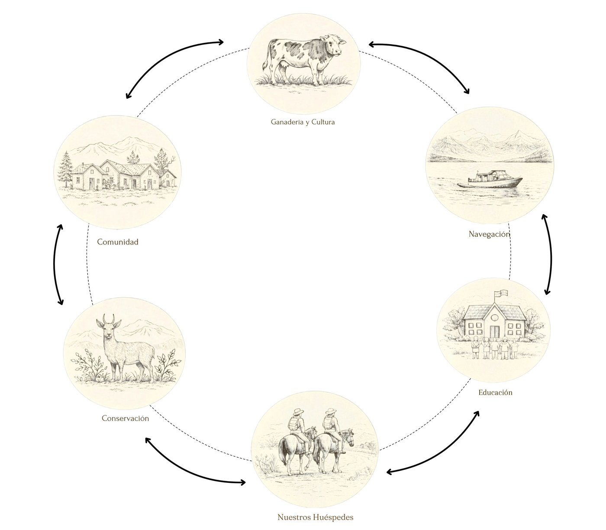
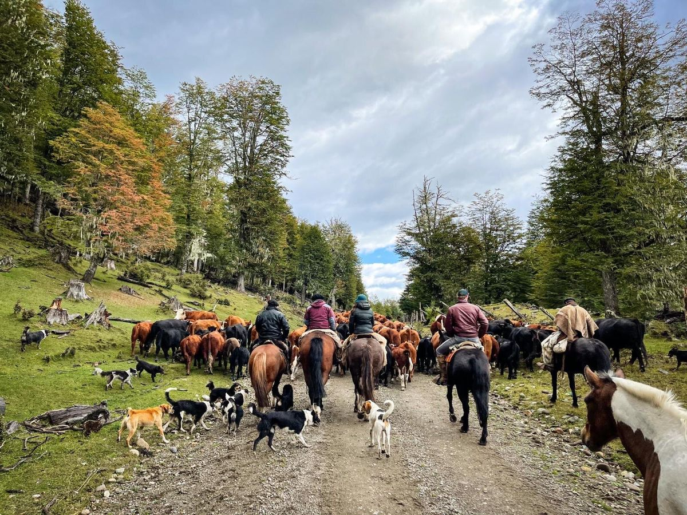
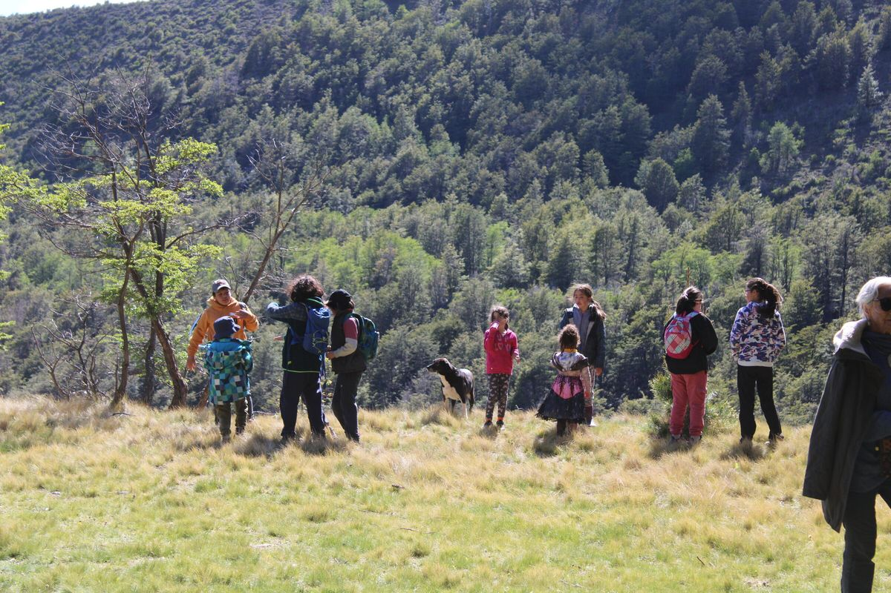
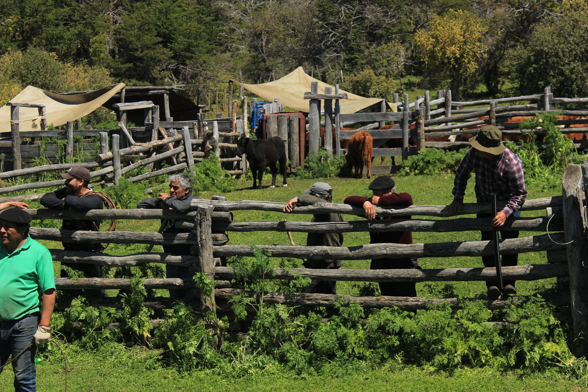
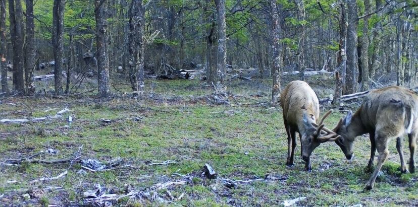
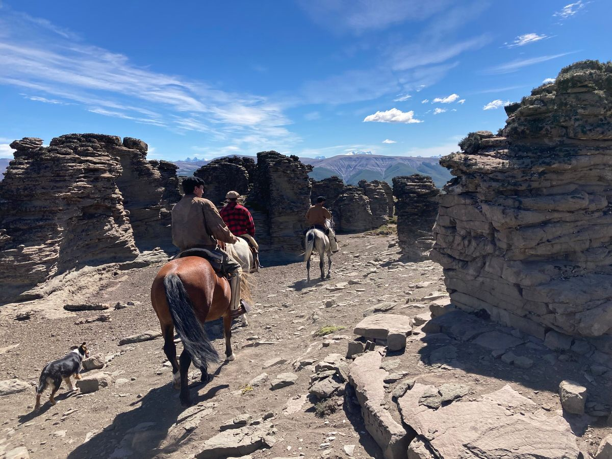

La Naviera Hoy
Tierra que sigue viva, donde tradición, naturaleza y comunidad se entrelazan en el día a día.


Ganadería y Cultura
Marcaciones, rodeos, arreos.
El paso de un buen caballo y el perro de compañero. Lazo, facón y botas. El hombre Gaucho. El cerco y la cosecha.
Somos bendecidos cada día por trabajar en esta tierra; los trabajos de corral, las veranadas, el ganado.
La cultura empapa y se siente palpitar!

Educación
Creemos firmemente en el impacto de la educación en nuestros niños, en nuestra comunidad. Te invitamos a aportar a “Cuenca Viva”, una fundación para canalizar recursos y calidad educacional. Una educación conectada con nuestro entorno; que abra puertas, conecte y prepare a nuestros niños para su futuro y para seguir cuidando esta región que amamos.
Saber más de Cuenca Viva
Comunidad
Cada una de nuestras experiencias, nuestros productos, nuestras comidas, las lanas y tejidos; todo viene de nuestra comunidad.
Son las manos de nuestros vecinos y amigos las que adornan nuestra mesa.
En La Naviera nos preparamos de manera exclusiva para cada grupo o familia que nos visita y eso lo hacemos en comunidad.

Conservación: Rewilding
Estamos profundamente conscientes de la responsabilidad que tenemos de conservar, proteger y cuidar esta naturaleza maravillosa. Es nuestra casa y la de miles de especies que la habitan desde mucho antes. Desde la ganadería hasta las prácticas más cotidianas deben abrazar esa convicción.
Desde el 2023 estamos trabajando junto a Rewilding Chile en un programa de monitoreo y cuidado de los huemules que habitan en La Naviera, un regalo poder hacerlo. Muchas gracias a Rewilding por la dedicación y pasión con que empujan esto.
Saber más de Rewilding
El Rol de Nuestros Huéspedes
El recibir pasajeros se ha convertido en un intercambio, donde cada uno de nosotros, desde los niños, hasta nuestros vecinos entregamos lo que sabemos y nos nutrimos de los que vienen.
La valoración de la cultura, la admiración de la naturaleza, el aprendizaje, las experiencias, nutren en toda dirección.
Fuiste feliz en esta tierra, bendecida en plenitud. Tu carácter auténtico, creativo y sencilloy de noble porte, te ubicaban en el centro de la acción, con igual naturalidad en unahumilde cabaña o en un salón palaciego.Atilio Cosmelli a Luz Pereira el día de su partida, 27 de diciembre de 1979